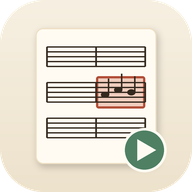

Herramientas para músicos
Lectura Pro
La partitura sigue a la canción: repeticiones, ×N, casillas y saltos
Tus partituras
Sube el PDF de la partitura y el audio de la canción, y dale play: el compás que suena se va marcando y la página baja sola. Lee sola los números de compases (un 9 = nueve vueltas), las repeticiones, las casillas y el D.S. al coda.
Todo queda guardado en este teléfono o computadora: nada se sube a internet.
Ponle la canción
Sube el audio de la canción (mp3, m4a, wav…). La app escucha el pulso y lo alinea con los compases.
🎵
0:00.0
Ajustar a la grabación (dónde empieza, compás, marcar a mano)
El compás 1 empieza en
Para grabaciones en vivo o con cambios de tempo: pon play y aprieta T (o el botón) al comienzo de cada compás.
Orden

Hecha por Anggelo Berdejo — El Ñañe · @anggelo.berdejo · Otras herramientas